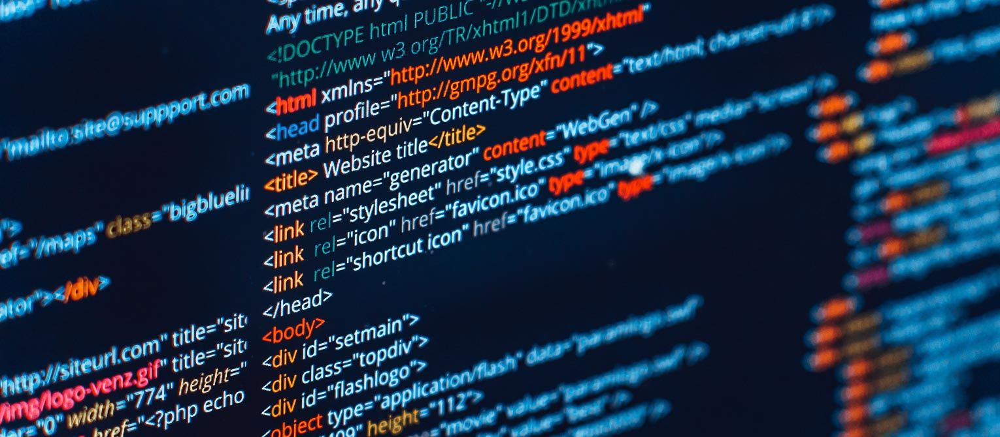

Web Development
Создание и разработка сайта
Быстрый и эффективный способ увеличить целевой трафик на Ваш сайт

Создание сайта – это трудоемкий и относительно длительный процесс, который протекает в несколько этапов, по мере прохождения которых идея заказчика превращается в реальный функционирующий сайт или интернет-магазин.
Создание сайта – процесс, в котором обычно участвуют несколько специалистов. Чтобы проект был успешным, необходимо как минимум определить:
Процесс разработки веб-сайта можно разделить на следующие этапы:
Давайте теперь рассмотрим каждый из этих этапов подробнее.
Маркетинговое планирование
На этом этапе выясняются сами основы создаваемого сайта. Что сайт должен делать? Каковы его главные задачи? Чего вы хотите достичь с его помощью? Что вы хотите этим сайтом донести до ваших посетителей? Эти и другие многочисленные вопросы помогают определить, каким будет сайт.
Техническое планирование
Это этап, которым часто незаслуженно пренебрегают (Особенно если поджимают сроки). А ведь давно известно - каждый потраченный на планирование час позволит сэкономить три-четыре часа на этапе разработки. Здесь стоит особое внимание уделить тому, как должна работать навигация (Как посетитель попадет на эту страницу с главной?). Не забудьте и о программных функциях (Пользователь нажал на вот эту кнопку – что при этом должно произойти?).
Дизайн сайта
Один из наиболее сложных этапов. Прежде всего потому, что большинство из нас привыкло оценивать дизайн отдельно от самого сайта, как оценивают картину или музыку в песне отдельно от её слов.
Здесь стоит вспомнить о целях, которые вы поставили перед сайтом (Цель поразить всехкрасивой картинкой?). Говорит ли дизайн о том, что предлагает ваша компания? Соответствует ли он вашему корпоративному стилю (У вас ведь есть корпоративный стиль?). Четко ли он показывает ваше отличие от конкурентов? Не помешает ли дизайн в дальнейшем эффективно подвигать сайт? И это только часть вопросов, которые надо себе задать.
Верстка
Верстка – это перевод дизайна, до сего момента существующего в виде картинки, в HTML-код. Здесь есть свои особенности. Хорошо сверстанный сайт будет одинаково работать во всех основных веб-броузерах и на наиболее распространенных разрешениях (Или вы можете позволить себе терять клиентов?).
Система управления сайтом (CMS)
Серьезной задачей является выбор программного «движка», позволяющего обновлять информацию на сайте без лишних сложностей. (Если вы можете поручить задачу обновления своей секретарше, и она с этим справится без помощи вашего программиста – значит все ок). Кроме того, иногда приходится изменять структуру сайта – например, переместить раздел или создать новый. Этот процесс тоже не должен вызывать трудности. Следование открытым стандартам также очень важно – не стоит «приковывать» себя к чьей-то закрытой технологии.
Наполнение сайта
Несмотря на то, что тестирование происходит на каждой из стадий реализации проекта,окончательное тестирование необходимо. Что надо проверить? Вот несколько самых важных моментов. Во всех ли современных броузерах работает сайт? Все ли необходимые материалы размещены? Все ли программ ные компоненты работаютслаженно и четко?
Маркетинговое планирование
На этом этапе выясняются сами основы создаваемого сайта. Что сайт должен делать? Каковы его главные задачи? Чего вы хотите достичь с его помощью? Что вы хотите этим сайтом донести до ваших посетителей? Эти и другие многочисленные вопросы помогают определить, каким будет сайт.
Тестирование и выкладывание
Несмотря на то, что тестирование происходит на каждой из стадий реализации проекта, окончательное тестирование необходимо. Что надо проверить? Вот несколько самых важных моментов. Во всех ли современных броузерах работает сайт? Все ли необходимые материалы размещены? Все ли программные компоненты работают слаженно и четко?
И вот, когда тестирование закончено, наступает момент размещения сайта. Вопреки расхожему мнению, после того как сайт выложен, работа с ним не заканчивается. Если ваша цель – превратить свой сайт в инструмент маркетинга, то приготовьтесь к тому, что надо будет:
Это не просто, но поверьте нашему опыту – все эти усилия окупятся сторицей.
Работая с нами, Вы получите не просто команду разработчиков и маркетологов, но и сайт вашей мечты, сайт будущего, сайт, который будет радовать Вас каждый день. Мы сделаем все возможное и невозможное, чтобы достичь желаемого результата. Работая вместе мы будем не только, как заказчик и исполнитель, мы станем партнерами и не побоимся этого слова друзьями. Ведь наши клиенты – это наша семья.